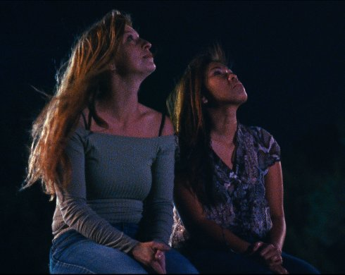

{kind=link}
Filmmaker in focus: virgil vernier

Mercuriales
Saturday | 12 oct | 6.30 pm | werkstattkino
Sophia Antipolis

Saturday 12 oct | 9.00 pm | Filmmuseum
Vernier’s attention to the surreal in the everyday and the mythological in the trivial results in a disquieting psycho-geographic portrait of the obscure, seamy side of modern capitalism, where prophetic visions and wandering ghosts thrive without resolution.
“Sophia Antipolis proves that there are new voices out there experimenting with form, narrative and character, and finding new ways to address the political turbulence of the world, on the level of everyday experience.” (Jonathan Romney, Sight & Sound)
Sapphire Crystal
Saturday 12 oct | 9.00 pm | Filmmuseum
Nightclub debates, girls from the East and contemporary totems paint a portrait of luxury and vanity that echoes the progress of a decidedly unique body of work. (Antoine Thirion, Locarno Film Festival)
Virgil Vernier born 1976 in Paris. Studied philosophy and art. After first documentaries he started his celebrated series with films between document and fiction, whose documentary content does not seem to be from this time or from this world. As if under a burning glass, the uncanny oddities of the world reveal themselves as socially critically anchored science fiction, captured in the sublime beauty of the 16mm material.
|
| Films Autoproduction 2009 | Commissariat 2009 | Thermidor 2009 | Pandore 2010 | Orléans 2012 | Mercuriales 2014 | Sophia Antipolis 2018 | Sapphire Crystal 2019
|